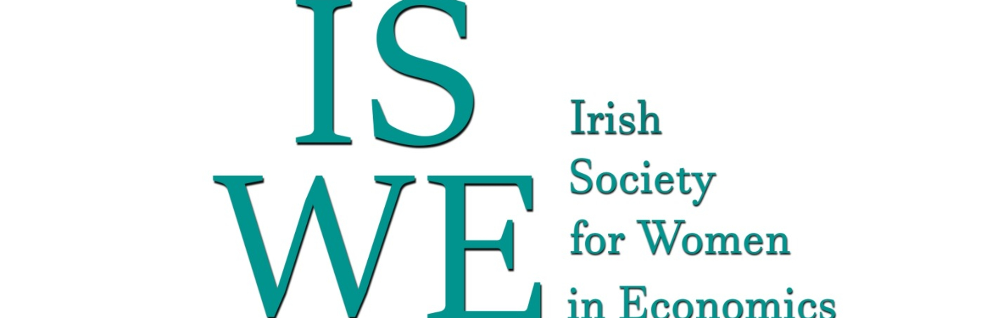

From mandated disclosure to public dataset: paygap.ie and three years of Irish gender pay gap reporting
The Gender Pay Gap Information Act 2021 established Ireland’s first systematic disclosure regime for pay disparities, requiring large employers to publish annual figures on hourly and bonus gaps and on the gender composition of pay quartiles. The regime addresses a persistent disparity in the Irish labour market particularly in the private sector (Turner, Cross, and Murphy 2020) and with limited institutional progress in sectors such as higher education (O’connor and Irvine 2020). The Act, however, assigned the architecture of public access to the employers themselves. Each report is hosted on a separate corporate website, in a format of the employer’s choosing, with no central register, no machine-readable specification, and no requirement to retain past reports. Three years into the regime, the reports exist but the corpus is not analysable at the level of the national economy.
The Irish regime has been extended in successive stages. The 2022 cycle applied to organisations with 250 or more employees, the 2024 cycle lowered the threshold to 150, and the 2025 cycle will lower it to 50 employees, extending coverage to a larger share of the workforce. The Act forms part of a wider European movement towards mandated pay transparency, a heterogeneous policy landscape whose instruments range from a right to request pay information to mandatory reporting, pay audits and equality bargaining obligations (Bennedsen, Larsen, and Wei 2023; Bosch and Barit 2020). It was modelled on the United Kingdom’s Gender Pay Gap Information Regulations 2017, which applied the same 250-employee threshold from the outset and a comparable set of indicators, and under which the reported mean hourly gap has narrowed while the bonus gap has not (Abudy, Aharon, and Shust 2023). Other European jurisdictions have adopted different instruments: Iceland’s Equal Pay Certification, in force from 2018 with rollout completed by 2021, requires employers with 25 or more staff to obtain certification of equal pay for work of equal value; France’s Index de l’égalité professionnelle, introduced in 2018 with first reports in 2019, combines several measures into a single score out of 100, with penalties of up to 1% of payroll for firms remaining below 75 for three consecutive years without adequate corrective action; Germany’s Pay Transparency Act 2017 grants employees in establishments with more than 200 staff an individual right to enquire about comparable colleagues’ pay, an instrument whose scope and enforcement have been assessed as limited (Ahrens and Scheele 2022). The principal Union-level development is the EU Pay Transparency Directive (Directive (EU) 2023/970), adopted in May 2023, which member states must transpose by 7 June 2026. The Directive sets Union-wide minimum requirements: reporting for employers with 100 or more employees (phased from 2027), mandatory joint pay assessments where an unjustified gap of 5% or more is identified in any category of workers, and a reversal of the burden of proof in equal pay disputes from employees to employers. Ireland’s planned 50-employee threshold for 2025 will exceed the Directive’s reporting scope without adding enforcement policies.
A body of quasi-experimental research has assessed whether such mandates reduce the gap. These evaluations are based predominantly on linked employer–employee administrative microdata from individual jurisdictions and use size-based reporting thresholds within difference-in-differences or regression-discontinuity designs (Bennedsen, Larsen, and Wei 2023). Where effects are identified, they are small in magnitude and gradual: the Danish and Canadian governments reduced the gap by less than 5%, an outcome attributable to slower growth in men’s pay rather than to increases in women’s pay (Bennedsen et al. 2022; Baker et al. 2023), while a weaker Austrian reporting requirement produced no measurable effect (Gulyas, Seitz, and Sinha 2023). A further UK intervention that disclosed institution-level figures reduced the academic gender pay gap with a comparable impact (Gamage et al. 2024). The magnitude of any effect depends less on disclosure itself than on the institutional channel through which information is converted into bargaining leverage: collective agreements and works councils in Germany (Vaccaro, Wydra-Somaggio, and Homrighausen 2025), and a publicly searchable salary register rather than the statutory duty alone in Canada (Lyons and Zhang 2023). Two further constraints recur in this literature: privacy norms surrounding pay restrict the diffusion of wage information even where disclosure is permitted (Cullen and Perez-Truglia 2023), and voluntary disclosure is a weak signal of underlying performance (Huang and Lu 2025). At the contrary, binding statutory obligations have produced measurable reductions, as with United States equal pay legislation in the 1960s (Bailey, Helgerman, and Stuart 2024) and Chilean equal pay law (Cruz and Rau 2022).
Responding to the lack of infrastructure in the Irish reporting requirements, paygap.ie was established in 2022 to address this challenge. The site locates each company report, extracts the values required by the Act, harmonises them across employers, assigns NACE classifications, and publishes the aggregate dataset under an open licence. As of May 2026, paygap.ie contains 2,168 individual company reports covering 880 unique employers across 3 reporting cycles (2022, 2023 and 2024) and all 20 NACE sections of the Irish economy. A panel of 602 employers has reported in all three cycles, which permits analysis of within-firm change over time. The 2024 extension of the Act to organisations with 150 or more staff is observable in the data: 169 employers appear for the first time in that year. Across the dataset, the aggregate gender gap is consistent. The mean hourly gap is 11.30% across all reports, and 85.8% of companies report a gap favouring male employees. The annual averages have shifted only marginally (11.84% in 2022, 11.09% in 2023, 11.02% in 2024), indicating that three reporting cycles have not, in themselves, produced economy-wide convergence. This is consistent with the comparative evidence: first-generation disclosure mandates have not produced rapid economy-wide convergence in the absence of stronger remedial obligations (Bennedsen, Larsen, and Wei 2023; Gulyas, Seitz, and Sinha 2023; Abudy, Aharon, and Shust 2023). Within the panel of firms reporting in both 2022 and 2024, change is bidirectional: the mean within-firm change is -1.15%, with 60.4% of firms narrowing their gap and 37.8% widening it, an order of within-firm adjustment comparable to that reported for disclosure interventions in other jurisdictions (Gamage et al. 2024). Change, where observed, is incremental and unevenly distributed.
The pay quartile data indicates a structural feature of the Irish labour market that recurs across sectors. Women represent 51.0% of employees in the lowest pay quartile and 39.7% in the highest, and this distribution is stable across all three reporting cycles. The difference between the female share of Q1 and of Q4 is largest in Construction (18.3%), Financial and Insurance Activities (17.7), Manufacturing (14.8) and Information and Communication Technology (14.5), and smallest in Public Administration (4.5) and Human Health and Social Work (3.1), where formal grade structures appear to constrain it. The mean hourly gap by sector follows the same ordering, with Financial and Insurance Activities (19.8%) and Construction (20.0%) at the upper end and Public Administration (4.2%) and Agriculture (2.5%) at the lower; sectoral patterning of this kind has also been documented in Irish earnings microdata (Turner, Cross, and Murphy 2020). The standard deviation of sector means is 7.1%, while the average within-sector standard deviation across firms is 12.3%; sector therefore accounts for part of the variation in reported gaps, while firms within the same sector differ substantially. This firm-level heterogeneity is consistent with a wider literature in which a large share of the gender pay gap is generated within firms and within jobs rather than through sorting across industries (Penner et al. 2023; Jewell, Razzu, and Singleton 2020; Casarico and Lattanzio 2024; Li, Dostie, and Simard-Duplain 2023; Barth, Kerr, and Olivetti 2021), in which the association between firm size and within-firm inequality is weak (Jones and Kaya 2023), and in which firm age is related to the size of the gap (Cukrowska-Torzewska and Magda 2020). The under-representation of women in the upper pay quartile is consistent with a vertical segregation that formal grade structures contain only partially (Kräft 2022; Woodhams, Trojanowski, and Wilkinson 2022; Said, Majbouri, and Barsoum 2022), and that is attenuated where women hold a larger share of pay-setting managerial positions (Theodoropoulos, Forth, and Bryson 2022).
The persistence of the aggregate gap across three cycles and across sectors indicates that disclosure, in the absence of complementary obligations such as pay audits, action plans and sector-specific targets, is unlikely to produce convergence within a politically meaningful period (Bennedsen, Larsen, and Wei 2023; Gulyas, Seitz, and Sinha 2023; Bryson et al. 2020). Where transparency has been combined only with limited or ceremonial enforcement, it has been absorbed without redistributive effect: statutory pay audits may be decoupled from the practices that set wages (Salminen-Karlsson and Fogelberg Eriksson 2022), and public disclosure alone has generated limited reputational pressure on the lowest-performing employers, although consumer responses to disclosed gaps are detectable (Sharkey, Pontikes, and Hsu 2022; Schlager et al. 2021).
ISWE Prize for the Best Data for Diversity Paper